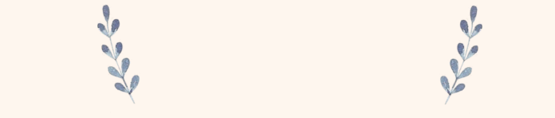

Vanilla was cultivated as a flavoring by pre-Columbian Mesoamerican people; at the time of their conquest by Hernán Cortés, the Aztecs used it as a flavoring for chocolate. Europeans became aware of both chocolate and vanilla around 1520.
Vanillin was first isolated as a relatively pure substance in 1858 by Nicolas-Theodore Gobley, who obtained it by evaporating a vanilla extract to dryness, and recrystallizing the resulting solids from hot water. In 1874, the German scientists Ferdinand Tiemann and Wilhelm Haarmann deduced its chemical structure, at the same time finding a synthesis for vanillin from coniferin, a glucoside of isoeugenol found in pine bark. Tiemann and Haarmann founded a company, Haarmann and Reimer (now part of Symrise) and started the first industrial production of vanillin using their process in Holzminden, Germany. In 1876, Karl Reimer synthesized vanillin from guaiacol.
By the late 19th century, semisynthetic vanillin derived from the eugenol found in clove oil was commercially available.
Synthetic vanillin became significantly more available in the 1930s, when production from clove oil was supplanted by production from the lignin-containing waste produced by the sulfite pulping process for preparing wood pulp for the paper industry. By 1981, a single pulp and paper mill in Thorold, Ontario supplied 60% of the world market for synthetic vanillin. However, subsequent developments in the wood pulp industry have made its lignin wastes less attractive as a raw material for vanillin synthesis. While some vanillin is still made from lignin wastes, most synthetic vanillin is today synthesized in a two-step process from the petrochemical precursors guaiacol and glyoxylic acid.
Beginning in 2000, Rhodia began marketing biosynthetic vanillin prepared by the action of microorganisms on ferulic acid extracted from rice bran. At $700/kg, this product, sold under the trademarked name Rhovanil Natural, is not cost-competitive with petrochemical vanillin, which sells for around $15/kg. However, unlike vanillin synthesized from lignin or guaiacol, it can be labeled as a natural flavoring.